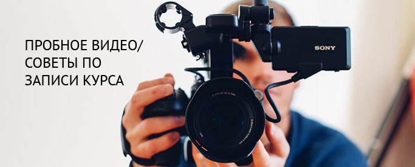

Панель преподавателя

Ниже приведены некоторые советы по его созданию:
Ваш 3-х минутный ролик позволит команде Damutek оценить подачу материала и обеспечить конструктивной обратной связью. Мы верим, что нашим советы помогут Вам создать высокачественный контент, востребованный широкой аудиторией.
- Просмотрите материалы, разработанные Вашими коллегами, для того, чтобы понять основные направления и формы преподнесения материала Damutek преподавателями.
- Ролик должен содержать обучающий материал, а не вступительную речь. Запишите, что-то специфичное из середины темы.
- Материал должен содержать все типы лекций (видеозапись с Вами, видео с экрана, презентации и т.д.)
- Используйте визуальные материалы - это видеокурс, а не аудиолекция.
- Будьте более раскрепощенным и менее официальным.
- Практикуйте свою подачу материла.
- Следите за речью, не допускайте слов-паразитов и ненужных пауз.
- Избегайте размахивания курсором по экрану.
- Для монтажа используйте видеоредакторы (например - Camtasia).
- Запишите и выучите стенограмму выступления (опыт показывает, что это экономит время и облегчает процесс).
- Демонстрируйте интузиазм и неравнодушие в ходе видеолекций.